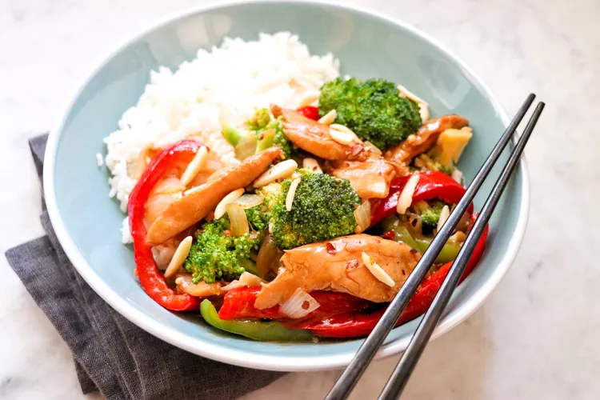

Chicken Stir Fry

Ingredients
- 8 oz of thinly sliced chicken breast
- 1 glove of minced garlic
- 1/2 diced yellow onion
- 10 brussel sprouts
- 15 broccoli florets
- 15 baby carrots
- Olive oil
- Panda Express Stir Fry Sauce
- 1 cup of jasmine rice
Directions
- Cut the vegetables. Brussel sprouts get halved, carrots get cut into small slices
- Cook the rice with 2 parts water and 1 part rice
- Pre-heat the wok on the stove top on high heat
- Add 1 tablespoon of olive oil
- Add the chicken, toss frequently until cooked ~2 minutes
- Remove the chicken from the wok and let sit
- add 1 tablespoon of olive oil to the wok
- add the vegetables to the wok. Cook for 2-4 minutes. If you like softer vegetables, cook for 4 minutes. 2 minutes for crunchier texture
- Add the chicken back
- Add 4 tablespoons of stir fry sauce
- Add rice to plate and add stir fry on top of the rice
Return to home page